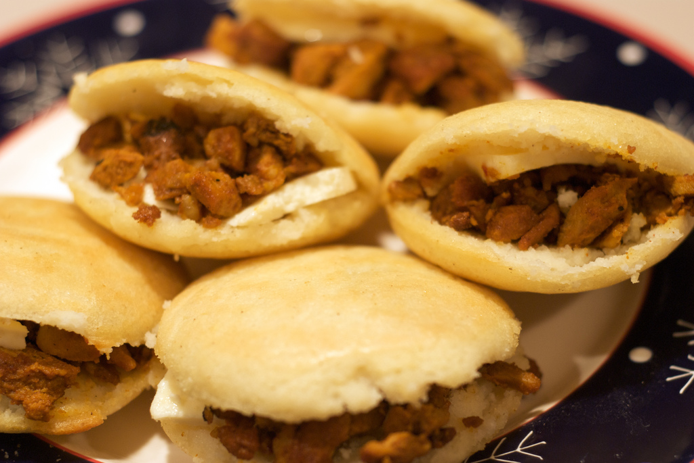
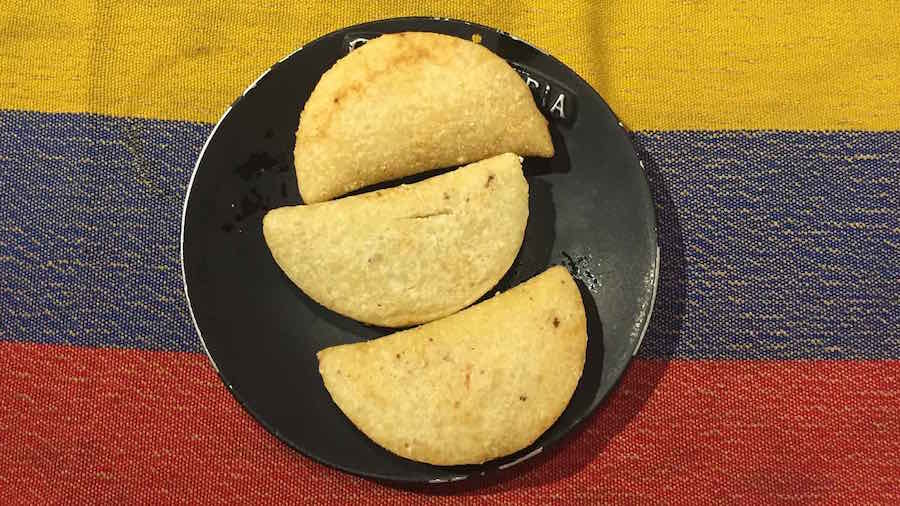
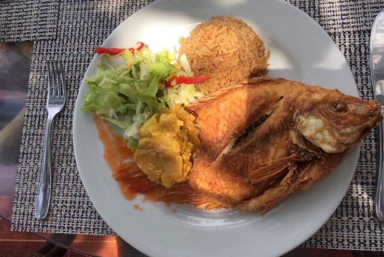
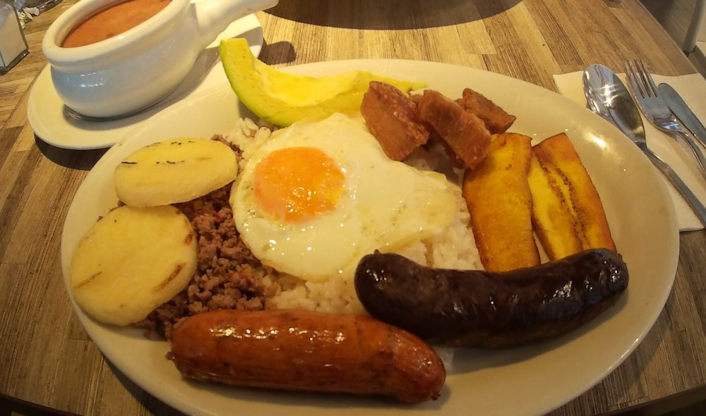

A culinária colombiana está cada dia mais em destaque, com restaurantes de Bogotá entre os melhores da América Latina e muitas comidas típicas de rua fazendo sucesso mundo afora. Apresentamos dois dos mais famosos pratos típicos abaixo.
CULINÁRIA


ARROZ DE COCO
Assim como no nordeste do Brasil temos o arroz de leite, na Colômbia um prato típico do litoral é o “arroz con coco”, muito popular na região do Caribe. Feito com leite natural de coco, geralmente é servido dentro da cuia do própria coco, acompanhado de outras delícias como patacones.
BANDEJA PAISA
Prato mata-fome criado em Medellín, a cidade de Pablo Escobar. Pode ser encontrado em restaurantes de toda a Colômbia. A composição mais comum do prato é essa da foto: arepas, patacones, morcela (a linguiça preta, de sangue coagulado e temperos), linguiça, arroz, torresmo, carne moída, feijão e um pedaço de abacate. Geralmente é um prato barato que alimenta de duas a três pessoas.